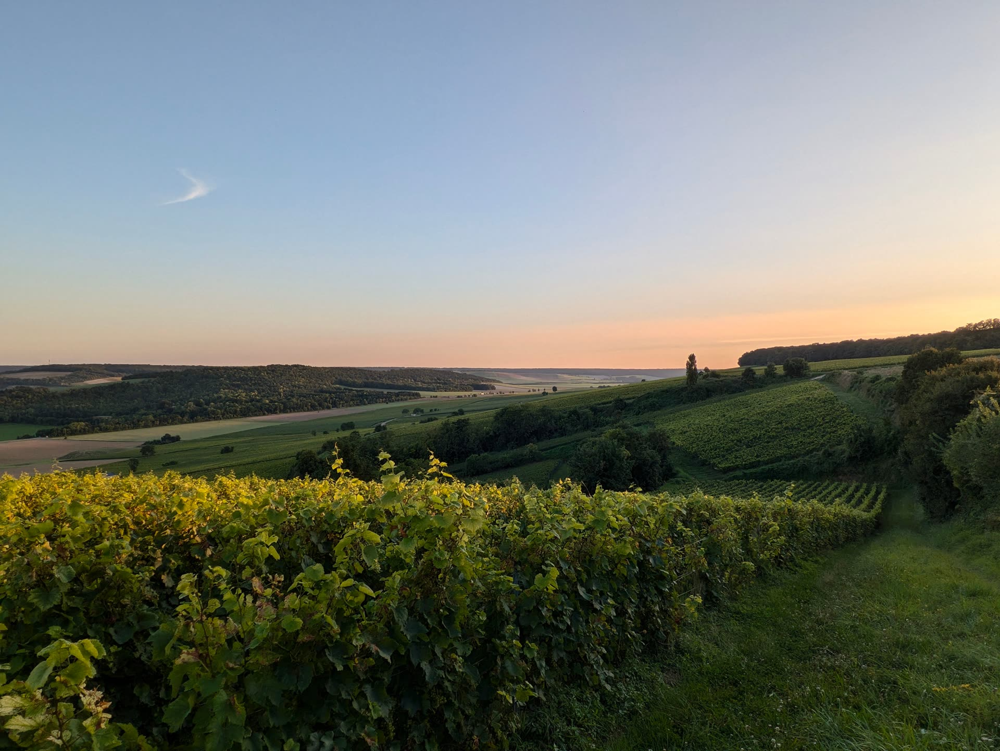

Le terroir
L'expression
d'un lieu unique
La Côte des Bar
Un terroir façonné par le temps
Situé au sud de la Champagne, notre vignoble s'étend sur un territoire où la nature a façonné des sols riches et complexes.
Ici, chaque parcelle possède sa propre personnalité. Le relief, l'exposition et la composition des sols influencent profondément l'identité de nos vins.

La terre
Des sols qui racontent une histoire
Nos vignes reposent sur des sols principalement argilo-calcaires, hérités de formations géologiques anciennes.
Cette richesse apporte fraîcheur, minéralité et profondeur, des caractéristiques essentielles à l'équilibre de nos champagnes.
Pinot Noir
Cépage emblématique de notre région, il apporte structure, puissance et profondeur aux assemblages.
Chardonnay
Il apporte finesse, élégance et fraîcheur, avec des notes florales et minérales.
Pinot Blanc
Un cépage historique qui participe à l'identité et à la singularité de certaines cuvées.
Une viticulture de précision
Chaque parcelle possède son identité
Nous travaillons nos vignes avec une approche parcellaire, afin de révéler au mieux les expressions naturelles de chaque terroir.
Découvrir nos champagnes